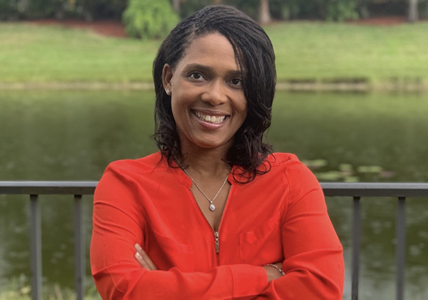

//Search divs
Judge Paul L. Backman
Broward County Clerk Brenda D. Forman
Howard C. Forman
Christopher Charles Hugley
Anthony Robbins
Sheriff Gregory Tony
Scott Israel
Wayne Clark
Mitchell Caesar
Chad Klitzman
Timothy Lonergan
Joe Scott
Ruth Carter-Lynch
Stephen Bryan Barrow
Narnike Grant
Debra Hixon
Jeff Holness
Laurie Kandel
Anthony Robbins
//Face button refrence
#Local{
background: rgba(0, 0, 0, 0) url("./BrowardCountyLogo.png") no-repeat scroll 12px 50% / 80% padding-box border-box;);
}
Broward County Candidates
Judges running for Clerk of Circuit Court
Judge Paul L. Backman

Overview:
- A retired Broward Circuit Judge who was on the bench more than 30 years.
- Backman received his B.A. degree from Long Island University in 1971 and his law degree from the John Marshall School of Law in 1975
- Backman began his career in 1975 as a sole practitioner working in civil law. He then became a Broward County Court judge in 1985.
Broward County Clerk Brenda D. Forman

Overview:
- She studied at Broward College and Union Institute University
- Brenda Forman is the current Broward County Clerk and was the first African American and the first elected female clerk in the history of Broward County
- She is currently under criminal investigation whether she made false statements under oath, as well as “additional complaints,” the governor’s office confirmed Friday. (sun-sentinel.com/local/broward/fl-ne-forman-executive-assignment-20190405-story.html)
Howard C. Forman
Overview:
Christopher Charles Hugley
Overview:
- He was born in Fort Lauderdale, Florida, and has “been serving the needs of others since his childhood”
- “He raises awareness and funds for issues including youth services, criminal justice reform, reading and education, mentoring, cultural arts, homelessness, and other social causes”
Anthony Robbins

Overview:
- Criminal Defense Investigator who founded the firm of Anthony L. Robbins, P.A. a South Florida Based Criminal Defense Investigation Firm
- Robbins, was nominated by former Florida Governor Jeb Bush to serve on the U.S Selective Service System Boardand was appointed by President George W. Bush to serve on the US Selective Service System as a Board Member, representing the residents of the State of Florida
Running for Broward County Sheriff
Sheriff Gregory Tony

Overview:
- Played college football for Florida State University and graduated with a degree in criminology
- He began his law enforcement career in 2005 with the Coral Springs Police Department where he served on the SWAT team for five years and rose to the rank of sergeant.
- He ran Blue Spear Solutions, which is a private business that trains security to respond to active shooter situations. In January 2019, he was sworn in as Broward County’s Sheriff.
Scott Israel

Overview:
- Scott Israel served as the head of the Broward Sheriff's office from 2013 until 2019. He was removed by an executive order from Governor Desantis.
- Throughout his term, two mass shootings occured: the Fort Lauderdale airport shooting and the Marjory Stoneman Douglas school shooting
Wayne Clark

Overview:
- Wayne is a veteran and Broward County attorney with fifteen years of legal experience in our local, state and federal legal systems
- He also served two years as a Staff Attorney for The Honorable Robert Rosenberg and The Honorable Victor Tobin in the 17th Judicial Circuit.
Running for Supervisor of Elections
Mitchell Caesar
Overview:
- He is an Executive Board Member on the Democratic National Convention, Chairman of the Florida Democratic Party and founder and president of the Tamarac Democratic Club.
- For 20 years, Ceasar was the chair for the Broward Democratic Party Ceasar was also one of the final 28 delegates who provided President Barack Obama with his historic Democratic nomination.
Chad Klitzman

Overview:
- He is an attorney, a screenwriter, a Broward native, a devoted frequent flyer, and, most importantly, he cares deeply about the integrity of the electoral process.
- Chad graduated summa cum laude from the University of Pennsylvania with a degree in Political Science and earned his law degree at Columbia University
- He wants to modernize elections and has visited all 67 election offices in Florida to find the most effective ways
Timothy Lonergan

Overview:
- He was the mayor Oakland Park and the president of Broward League of Cities
- He has worked in the Medicare Operations department of a major healthcare insurance company for 33 years
Joe Scott

Overview:
- Former Army Captain who works as a technologist for a Global 500 tech company he joined in 2016.
- He completed the computer science engineering track at the U.S. Military Academy at West Point and the Executive MBA program at Villanova University. He was awarded the Bronze Star Medal while deployed to Iraq
- His prior business experience includes six years in operations management and he consults government agencies as they transform their operations by integrating technologies that improve security, efficiency and sustainability.
Ruth Carter-Lynch
Overview:
- Ruth holds an MBA Certificate in Business Management/Executive Leadership from St. Thomas University, Minneapolis, MN. Ruth earned her Bachelor of Science in Social Science from Almeda University
- She holds more than 30 years of experience in the corporate world
School Board Elections
Stephen Bryan Barrow
Overview:
- He has over 5 years of volunteer service in the Broward County Public Schools system, including 2 years in leadership positions and over 1,500 total volunteer hours
Narnike Grant

Overview:
- Narnike has a Bachelors degree in Political Science from Florida Atlantic University, a Masters Degree in Cross Disciplinary Studies with a major in Conflict Resolution from Nova Southeastern University
- Has been and continues to be the PTO/PTSO President, Vice President, and Corresponding Secretary for the past 7 years at three Broward County Schools her children attend and have attended.
Debra Hixon

Overview:
- Debbi Hixon is a 31 year Nationally Board Certified Broward County public school teacher running for the Broward County School Board to bring strong leadership and positive change
- She is the widow of Chris Hixon, the slain Hero Athletic Director at Marjory Stoneman Douglas.
- Her goals are to:
- Bring safety and security to our schools.
- Value and lift up our teachers.
- Build open and positive relationships between schools and our communities.
- Expand mental health support in the schools.
Jeff Holness

Overview:
- He has been an active lead educator in Broward County for many years, working for over 20 years as a teacher and assistant principal designee for Broward County Schools.
- He is currently a small business owner and director of Kumon Math and Reading Center of Coral Springs-South
- He served as chair of the City of Plantation Parks and Recreation Board and has also served for many years as School Advisory Council member and chair for several schools in Broward County
Laurie Kandel
Overview:
- After attending Brandeis University for her first two years of college, Laurie completed both her Bachelor's degree with high honors and her law degree at the University of Florida.
- She is a member of the Florida Bar and started practicing law in a Gainesville law firm.
- She volunteered at Hawkes Bluff Elementary and Everglades Elementary, where she taught children that had been struggling to read and Laurie has worked at area synagogues, teaching children religious values and Hebrew in the classroom
Anthony Robbins
Overview:
- Criminal Defense Investigator who founded the firm of Anthony L. Robbins, P.A. a South Florida Based Criminal Defense Investigation Firm
- Robbins, was nominated by former Florida Governor Jeb Bush to serve on the U.S Selective Service System Boardand was appointed by President George W. Bush to serve on the US Selective Service System as a Board Member, representing the residents of the State of Florida